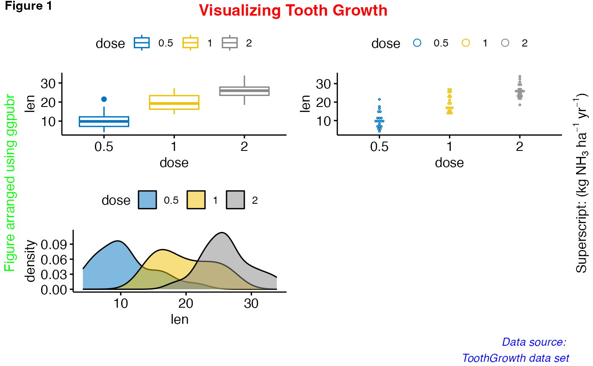

Annotate figures including: i) ggplots, ii) arranged ggplots from
ggarrange(), grid.arrange() and
plot_grid().
Usage
annotate_figure(
p,
top = NULL,
bottom = NULL,
left = NULL,
right = NULL,
fig.lab = NULL,
fig.lab.pos = c("top.left", "top", "top.right", "bottom.left", "bottom",
"bottom.right"),
fig.lab.size,
fig.lab.face
)Arguments
- p
(arranged) ggplots.
- top, bottom, left, right
optional string, or grob.
- fig.lab
figure label (e.g.: "Figure 1").
- fig.lab.pos
position of the figure label, can be one of "top.left", "top", "top.right", "bottom.left", "bottom", "bottom.right". Default is "top.left".
- fig.lab.size
optional size of the figure label.
- fig.lab.face
optional font face of the figure label. Allowed values include: "plain", "bold", "italic", "bold.italic".
Author
Laszlo Erdey erdey.laszlo@econ.unideb.hu
Examples
data("ToothGrowth")
df <- ToothGrowth
df$dose <- as.factor(df$dose)
# Create some plots
# ::::::::::::::::::::::::::::::::::::::::::::::::::
# Box plot
bxp <- ggboxplot(df, x = "dose", y = "len",
color = "dose", palette = "jco")
# Dot plot
dp <- ggdotplot(df, x = "dose", y = "len",
color = "dose", palette = "jco")
# Density plot
dens <- ggdensity(df, x = "len", fill = "dose", palette = "jco")
# Arrange and annotate
# ::::::::::::::::::::::::::::::::::::::::::::::::::
figure <- ggarrange(bxp, dp, dens, ncol = 2, nrow = 2)
#> Bin width defaults to 1/30 of the range of the data. Pick better value with
#> `binwidth`.
annotate_figure(figure,
top = text_grob("Visualizing Tooth Growth", color = "red", face = "bold", size = 14),
bottom = text_grob("Data source: \n ToothGrowth data set", color = "blue",
hjust = 1, x = 1, face = "italic", size = 10),
left = text_grob("Figure arranged using ggpubr", color = "green", rot = 90),
right = text_grob(bquote("Superscript: ("*kg~NH[3]~ha^-1~yr^-1*")"), rot = 90),
fig.lab = "Figure 1", fig.lab.face = "bold"
)
